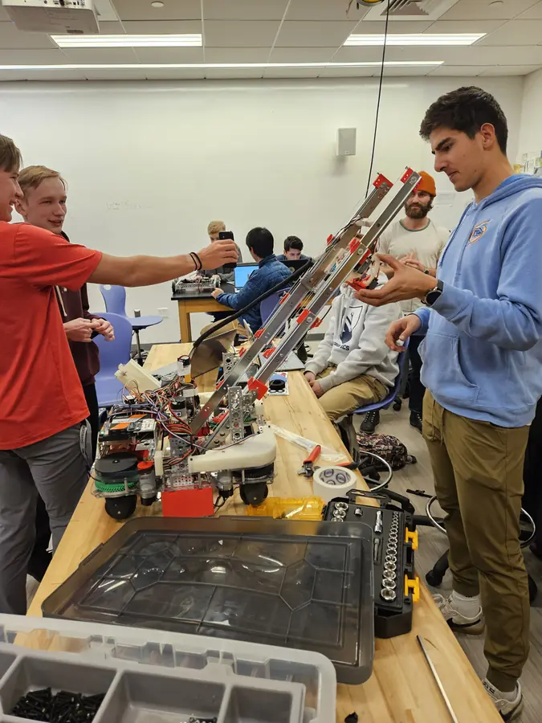

A cascading linear slide stacks telescoping stages, each rigged so that all of them extend at once. The result is long reach from a short retracted height. I designed the slide system for the 2023–24 robot.
I also helped build the robot's swerve drive. Each wheel module uses a DC motor to drive and a servo to set its azimuth, so the robot can translate in any direction while rotating independently. Swerve is much less common in FTC than in FRC, because of FTC's tighter size and motor limits.
